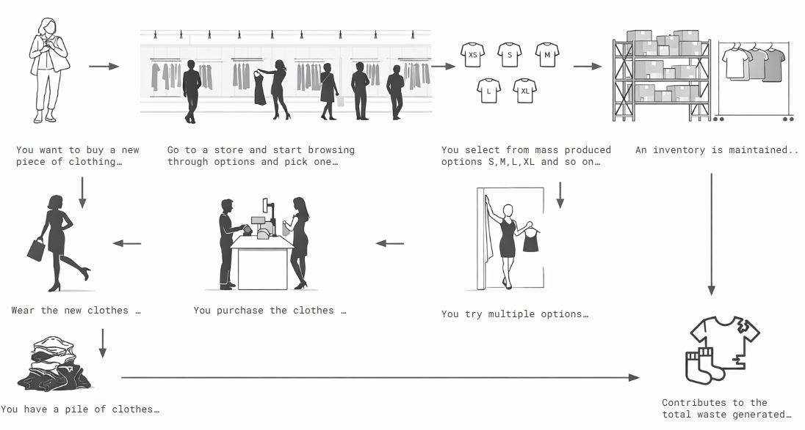
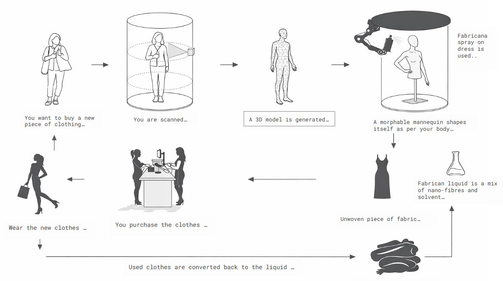
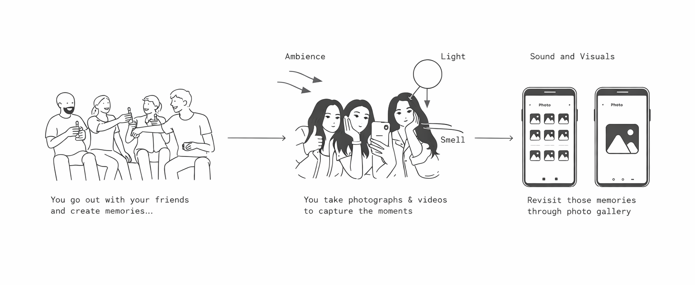
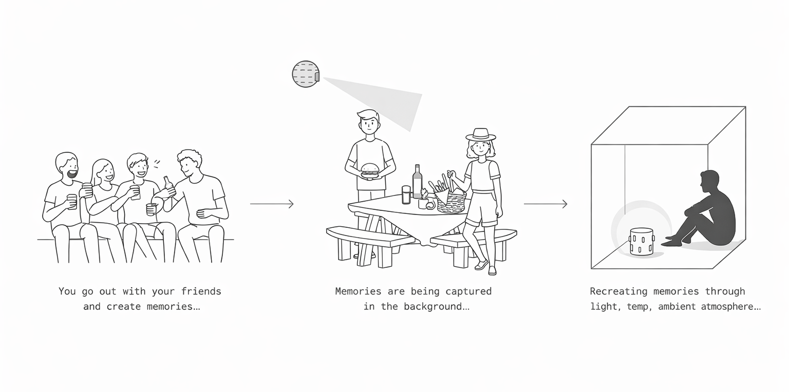
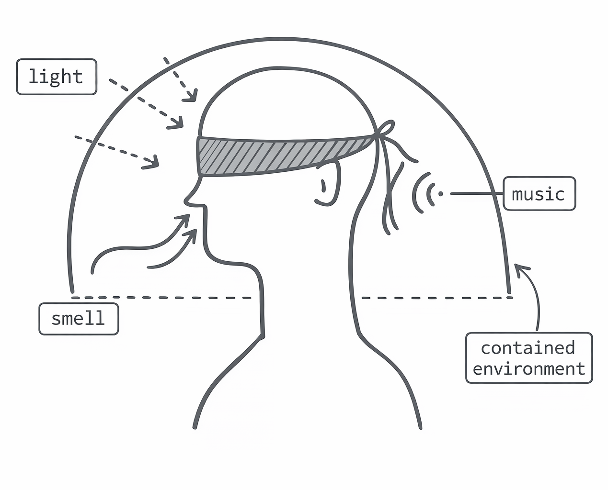
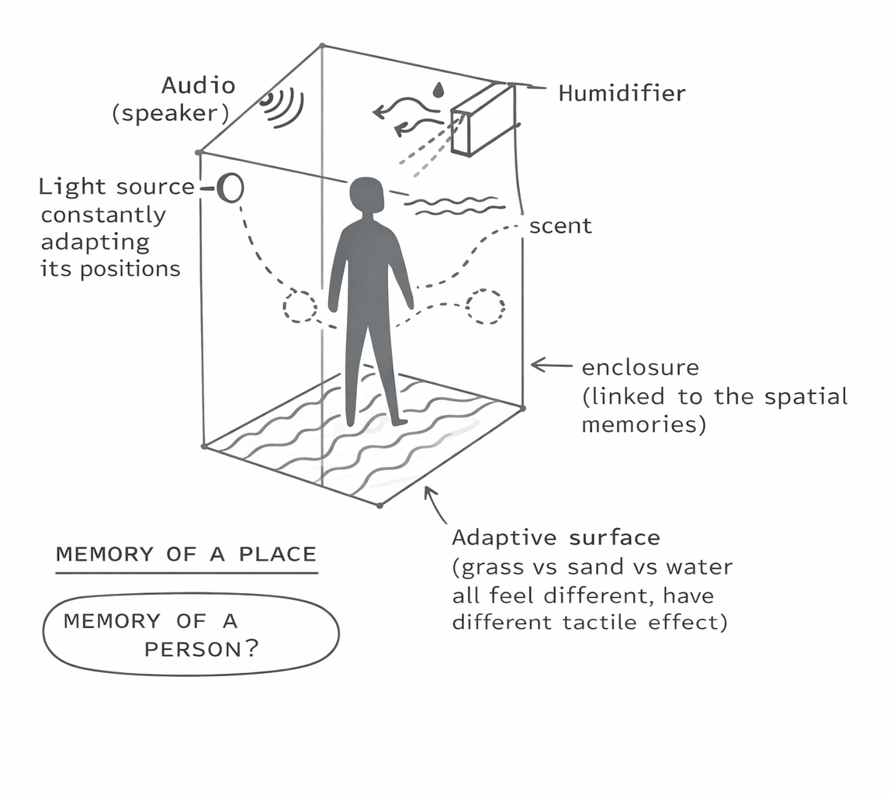
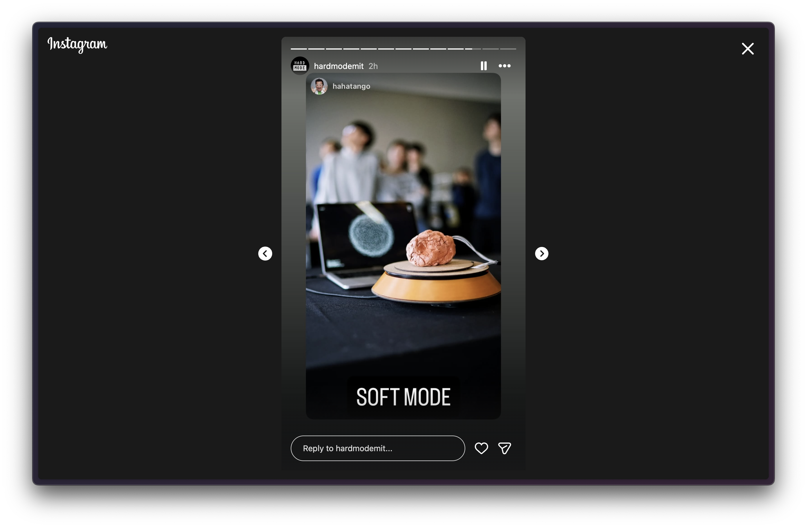

Bespoke Apparel
Closed loop system for clothing
Current narrative
Clothing today is selected from pre-defined options. Users browse, choose from standardized sizes, and accumulate garments over time, often with poor fit and redundancy. This linear system disconnects the body from production, resulting in excess inventory and waste.

Possible narrative
The process begins with the body. A user is scanned, generating a precise model that directly informs fabrication. Garments are created on demand, potentially through spray-based materials, on morphable forms that match the body exactly. Clothing becomes adaptive, continuously updated, and part of a closed-loop system rather than a static product.

What space does it impact?
It reshapes fashion, manufacturing, and sustainability by replacing mass production with localized, data-driven fabrication. This directly addresses textile waste, where a large portion of garments are never used or discarded early.
Who are the people involved?
Users, micro-factories, material innovators, scanning hardware providers, cloud systems, and environmental regulators form an interconnected ecosystem around production and lifecycle tracking.
Why is it valuable to them?
Users get perfect fit and personalization. Manufacturers eliminate inventory risk. The system reduces waste by closing material loops, shifting apparel from a consumptive model to a regenerative one.
Memory Device
A device to capture and recreate a person's memory
Current narrative
Memories are captured as fragments, photos and videos, missing critical elements like ambience, temperature, and smell. What we store is only a partial reconstruction of the original experience.

Possible narrative
Memories are captured as multisensory datasets and later reconstructed as environments. Instead of viewing a moment, users re-enter it through light, sound, atmosphere, and spatial cues. Memory shifts from documentation to immersion.

What space does it impact?
It sits across experiential media, HCI, and healthcare, especially in memory-related therapy and digital archiving.
Who are the people involved?
Individuals, families, therapists, engineers, and designers collaborate in capturing, reconstructing, and interacting with memory environments.
Why is it valuable to them?
It enables deeper emotional recall and more meaningful preservation. In healthcare, it offers new ways to engage cognition; for individuals, it transforms memory into a lived experience rather than stored media.


Modulon
Creating panels that produce energy, filter water & filter air
Current narrative
Buildings act as passive shells, relying on centralized systems for energy, water, and air. These functions are disconnected from the surfaces that define the built environment.
Possible narrative
Surfaces become active systems. Modular units generate energy, filter air, and purify water while connecting through a shared infrastructure. Buildings evolve into distributed ecosystems that capture, transform, and redistribute resources.
What space does it impact?
It transforms architecture into climate infrastructure, shifting from centralized utilities to localized, adaptive systems embedded in surfaces.
Who are the people involved?
Architects, engineers, developers, energy providers, and occupants interact through a shared system of modular resource generation.
Why is it valuable to them?
It reduces dependency on external systems, enables scalable deployment, and turns buildings into producers rather than consumers of resources.
Programmable Matter
AI as matter
Narrative
Intelligence becomes something you shape. A clay-like interface responds to touch, deformation, and gesture, translating physical form into digital output. Instead of prompting AI, users sculpt it, turning interaction into a tactile, intuitive process. Devpost ↗


What space does it impact?
It redefines human-AI interaction, moving from screen-based interfaces to embodied, tangible systems across design, education, and creativity.
Who are the people involved?
Designers, creators, engineers, educators, and everyday users engage with AI through physical manipulation rather than code or text.
Why is it valuable to them?
It lowers the barrier to AI, making it intuitive and expressive. Physical interaction accelerates ideation and aligns better with how humans think, through making, not typing.